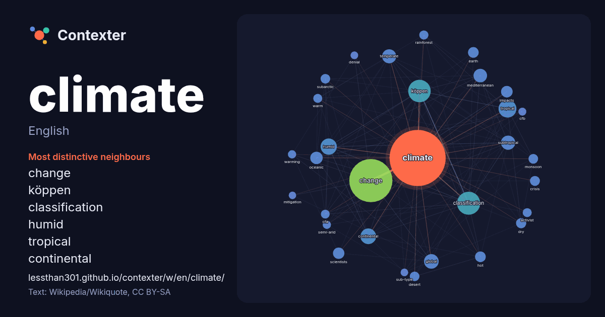

English · popular word
climate
The words found around it in 2102 instances from English Wikipedia, Wikiquote and Hacker News.

Most distinctive neighbours
- change 174×
- köppen 155×
- classification 123×
- humid 79×
- tropical 68×
- continental 62×
- temperate 61×
- subtropical 61×
- oceanic 48×
- mediterranean 47×
- global 38×
- subarctic 31×
- monsoon 30×
- scientists 29×
- rainforest 26×
- dry 25×
- cfa 25×
- impacts 24×
- desert 24×
- warm 23×
× = how many times more often than in general English Wikipedia text.
Most frequent neighbours
- change 601
- classification 173
- köppen 164
- tropical 103
- humid 85
- continental 79
- global 69
- subtropical 66
- temperate 64
- mediterranean 59
- oceanic 50
- system 46
- type 46
- impacts 43
- scientists 42
- action 41
- effects 41
- earth 37
- hot 37
- models 37
In context
- Climate is the long-term weather pattern in a region, typically averaged over 30 years. More rigorously, it is the mean and variability of meteorological Wikipedia snippets · Climate
- The Köppen climate classification divides Earth's climates into five main climate groups, with each group being divided based on patterns of seasonal precipitation Wikipedia snippets · Köppen climate classification
- Present-day climate change includes both global warming—the ongoing increase in global average temperature—and its wider effects on Earth's climate system Wikipedia snippets · Climate change
- climate (/ˌmɛdɪtəˈreɪniən/ MED-ih-tə-RAY-nee-ən), also called a dry summer climate, described by Köppen and Trewartha as Cs, is a temperate climate type Wikipedia snippets · Mediterranean climate
- In the study of past climates ("paleoclimatology"), climate proxies are preserved physical, chemical, and even biological characteristics of the past that Wikipedia snippets · Proxy (climate)
- An oceanic climate, also known as a marine climate or maritime climate, is the temperate climate sub-type in Köppen classification represented as Cfb Wikipedia snippets · Oceanic climate
- In geography, the temperate climates of Earth occur in the middle latitudes (approximately 23.5° to 66.5° N/S of the Equator), which span between the tropics Wikipedia snippets · Temperate climate
- Organisational climate (sometimes known as corporate climate) is a concept that has academic meaning in the fields of organisational behaviour and I/O Wikipedia snippets · Organisation climate
More English words
- art
- autumn
- bell
- bread
- bridge
- cat
- city
- clock
- death
- desert
- dog
- family
- food
- forest
- garden
- god
- gold
- health
- heart
- history
- honey
- horse
- island
- language
- life
- map
- mirror
- money
- mother
- mountain
- nature
- power
- rain
- road
- salt
- science
- shadow
- silence
- song
- star
- storm
- summer
- tea
- time
- train
- truth
- water
- winter
- work
Precomputed on 2026-10-09 with default settings (±5 words, medium corpus). The interactive map can refresh it with live data.